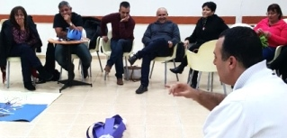

Warning: Undefined variable $html_content in /Users/meirsadan/Sites/mandel-ir/templates/item.php on line 30

בכירי עיריית באר שבע – מנהיגות, השראה ומזג האוויר
2016-03-02
Warning: Undefined variable $html_content in /Users/meirsadan/Sites/mandel-ir/templates/item.php on line 30